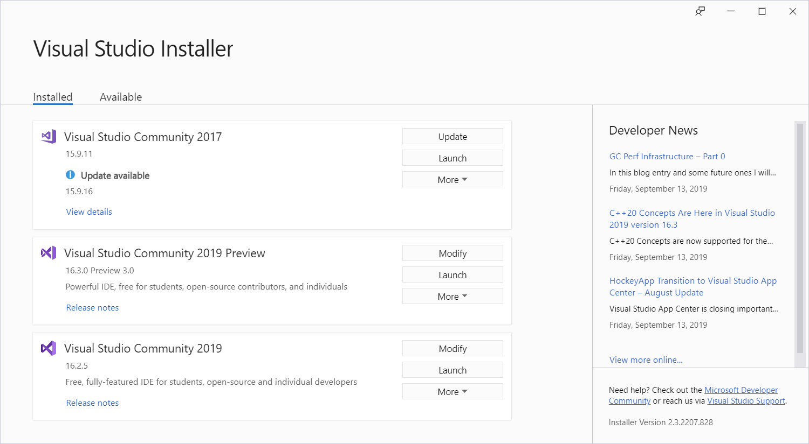
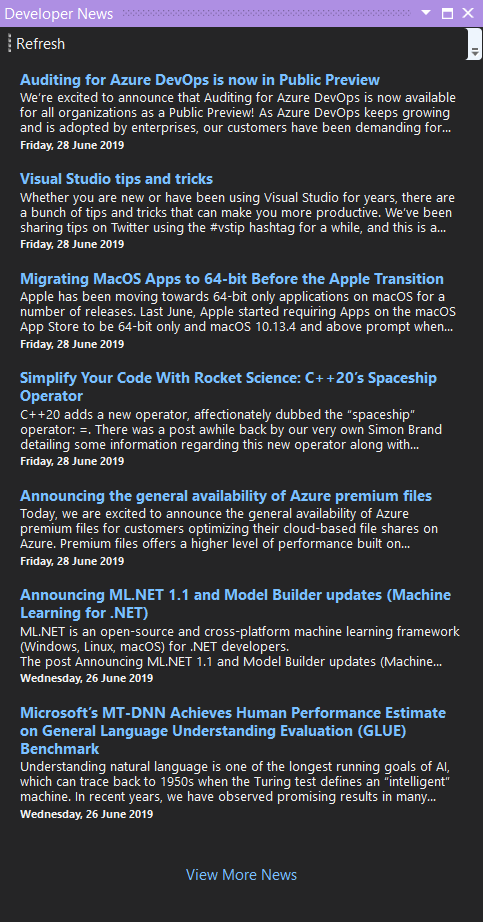

Overview
Bring back Developer News!


You can download this extension from the Visual Studio Marketplace
Where's My Developer News?¶
When Visual Studio 2019 was released, many developers were dismayed to find that the Start Page had been completely replaced by the new Start Window (a big modal dialog, which had no room for Developer News).
Community Outcry¶
There was a huge outpouring of disatification on the Developer Community forum that not only had the Start Page been taken away (& Developer News with it), but we were left with no way to get Developer News in Visual Studio 2019 anymore.
Microsoft's Response¶
Increduously, Microsoft's response was to simply add a watered-down version of the old Developer News to the right-hand column of the Visual Studio installer.
But nobody wants to have to open the installer just to view their morning developer news. They want to see it as soon as they open Visual Studio, as they had done for years.

Forum Announcement¶
I wrote a post in the Developer Community Forum to announce that "I've decided to write a little extension to add a tool window to display the missing Developer News, either as a stop-gap until MS decide to see sense, or to use instead for the future going forward if they don't".
Start Page Is Back (for now)¶
Another developer, Jan Kučera, released his Start Page on Startup extension to restore access to the VS 2017 Start Page. The page's code still existed in VS 2019, but the page had been "hidden" by Microsoft.
The original Developer News feed was of course also restored, but it was broken and there was no UI for us to be able to "fix" it. However, after a few tweaks to the extension Jan had the feed up and running again.
The only problem is that Jan's extension relies on displaying the Start Page that has been "hidden" in VS 2019. This page's code, as a Microsoft employee reminded us, "is subject to vanish at anytime".
Developer News Is Back!¶
The Developer News extension adds a new dockable tool window to display the same developer news feed that VS 2017's Start Page used to provide.
However it doesn't actually rely on the RSS feed control that's embedded in VS 2019's hidden Start Page implementation. So when Microsoft removes the code for the Start Page, and I do believe that they'll remove it at some point, any extensions that rely on that code will cease to function.
Unless of course they decide to give us back the Start Page as so many of us have been asking for in Start Page: Please give it back!
Developer News has been written from the ground up and will therefore not be affected.
To open the new Developer News window:
- select View | Developer News

The old Developer News feed is just the first developer-focused feed to be added to the new Developer News window, with more feeds to come in the near future (check out the roadmap for more details).
Support the Project¶
If Extensibility Logs has saved you time and hassle, please come back and show your support:
- you could rate Extensibility Logs (only takes a couple of seconds)
- or review Extensibility Logs (help others benefit from your experience)
- or shout me a coke (I don't drink coffee or beer lol)